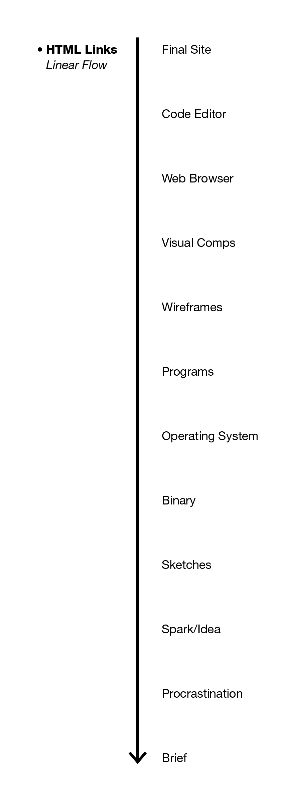

Website
Q2Column A: Our group decided to make a very playful and exploratory web-based art piece.
Column B: Our group is interested in creating a game based around Oxford dictionary’s second definition of ‘play’ “to take part in”. In our case, we want the user to play within in the creative process of a designer/creative, to strip the finished product all the way back to the pre-creative stages of when the designer/creative begins to work on a project.
As a group of designers, we were inspired by our own creative processes when we were coming up with the idea for this project. We understand the amount of work that it takes to create what may look like a very simple design, so we really wanted users who aren’t already familiar with the creative process to get a sense of where our finished products are coming from. We also wanted to visualize the creative/imaginative part of the human mind in a very abstract way.
Column C: For A2, our group will be focused on Sicart’s approaches to play and playfulness. He states that “Play is carnivalesque,” in which there is a balanced tension between creation and destruction. Through our art piece we explore the creation process of a website by reversing the stages it takes to build one, essentially breaking down and “destroying” our website. This concept can also be applied to the creative process of a designer, in which one has to look past the conventional barriers of design in order to create something that is new.
Sicart also references to play “as a way of expression, a way of engaging with the world—not as an activity of consumption but as an activity of production.” As designers, we are looking for a creative way to express ideas as well as communicate them. In order to produce a design, one must go through a process that is similar to Sicart’s idea of play. The creative process is a playground for the designer in which they are able to experiment freely with their own forms of expression and their concepts. Through our web-based creation we will have developed an interactive playground of the creative process that the user can explore that reveals the complexity of the design process.
Column D:Our group decided to choose the JavaScript-Oriented approach as we believe that it will enhance the user’s experience and allow us to experiment and develop our ideas and theme further.
Q3For A2 our group decided to build a web-based art piece that used interactive pages to explore the creative design process. As designers, we were inspired by our own creative processes to build A2. Through this project we aim to explain to users the somewhat complex process that a designer goes through to create something that appears to be quite simple. We also wanted to emphasize the idea that in order to get to the final product one must include “play” in their process, in which they come up with a multitude of ideas. In addition, our group wanted to express both the creation and destruction in process work which represents Sicart’s concept of “carnivalesque play,” investigating the process in reverse. The piece’s first page is a fully functioning website that gradually decomposes as the user moves through each page—moving backwards through the process to move forwards through the experience.
As a group, we also wanted to give the user as much creative freedom as we could to give the individual a more unique experience and to illustrate the idea that the creative process is different for everyone and that creativity is limitless. For example, the first page breaks down into a text editor with live preview of the code to the right of it. Here, the user can edit the code to their liking, however to move forward through the piece the user needs to delete all of the HTML and CSS making it appear is if they were just beginning to code. Each stage/page of this project provides the user with freedom but still places restrictions in order for the user to move on. Having these restriction also build the area for the user to play in, referencing to Bogost’s “possibility space,” in his concept of play. All of the pages follow a similar formula to guide the user to the last page, in which the end is just the beginning.
Q4Javascript: index.html, binary.html, brief.html, comps.html, editor.html, os.html, programs.html, sketch.html, spark.html, thought.html, wireframes.html
Requirements: index.html, binary.html, brief.html, comps.html, editor.html, os.html, programs.html, sketch.html, thought.html, wireframes.html
Q5  Q6This question is written from Hunter's perspective
I have been learning javascript for about 4ish years now so this is kind of hard to compile into a list. The only new thing I learned for this project was HTML5 Canvas which I learned from the Mozilla Developer Network Canvas docs which can be found here.
Some of the main sources for learning over the past few years for me are: CodeCademy, CodeSchool, and Jon Duckett's Javascript & JQuery Book amongst many other places.
Q7All artwork and design is original.
The facebook noise was found from here, and is public domain. It was edited into three different files to sound like it is coming from different directions.
The switch noise was found here and is free for commercial or non-commercial purposes.